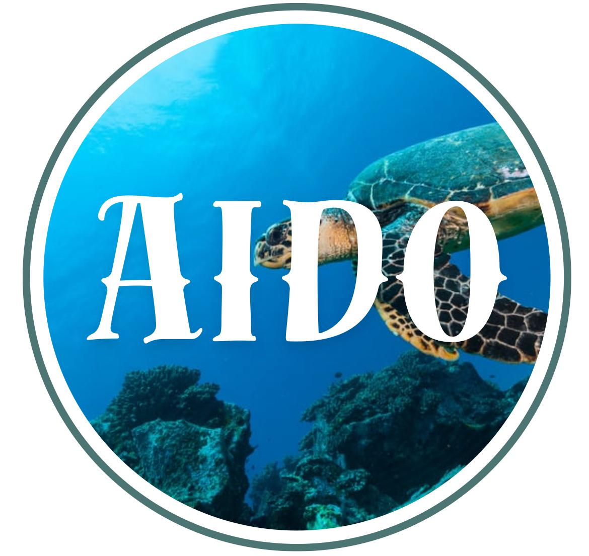

Bem-vindo ao AIDO
O projeto AIDO apresenta de forma acessível os principais impactos das mudanças climáticas nos oceanos — desde o aquecimento até os efeitos sociais e econômicos. Nosso objetivo é promover o conhecimento científico e incentivar atitudes responsáveis com o meio ambiente marinho.
Explorar
